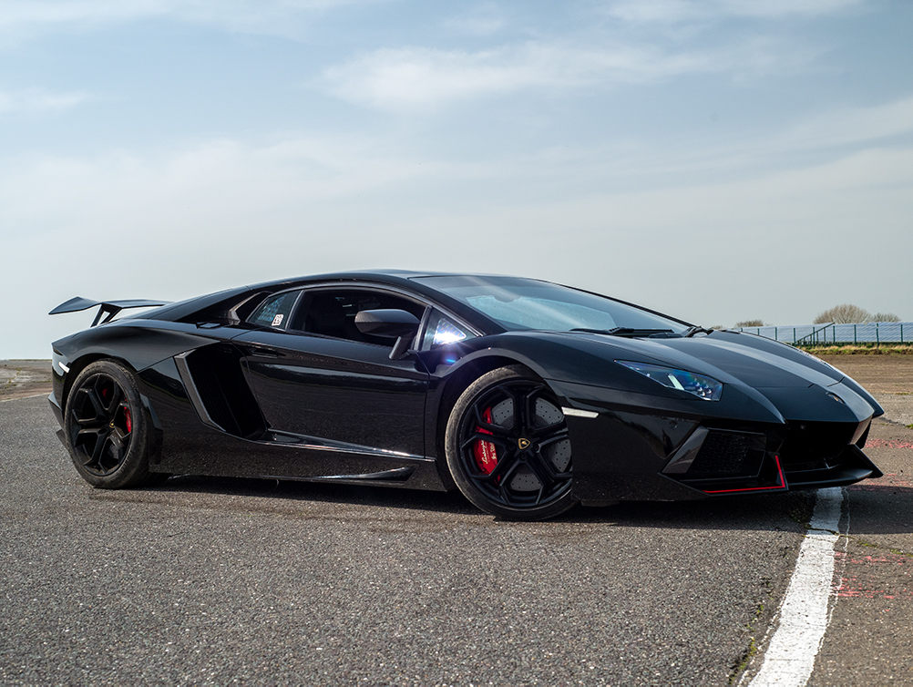

this is my dream car
the history of lamborghini aventador's The Aventador was launched on 28 February 2011 at the Geneva Motor Show five months after its initial unveiling in Sant'Agata Bolognese.
Internally codenamed LB834, it was designed to replace the then-decade-old Murciélago as the new flagship model.
Soon after its unveiling, Lamborghini announced that it had sold 12 cars, with deliveries starting in the second half of 2011.
By March 2016, Lamborghini had built 5,000 Aventadors. At the time, it was the second best selling Lamborghini model ever.
It was replaced by the new Aventador S in 2016.
the engine of lamborghini aventador's LP 700–4 used Lamborghini's 700 PS (515 kW; 690 hp) 6,498 cc (6.5 L; 396.5 cu in) 60° V12 engine, weighing about 235 kg (518 lb).
Known internally as the L539, it was Lamborghini's fifth in-house engine and only second V12 design since the 3.5-litre power plant found in the 350GT.